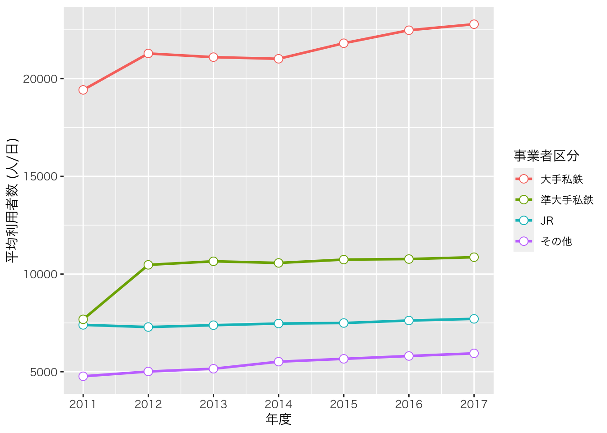
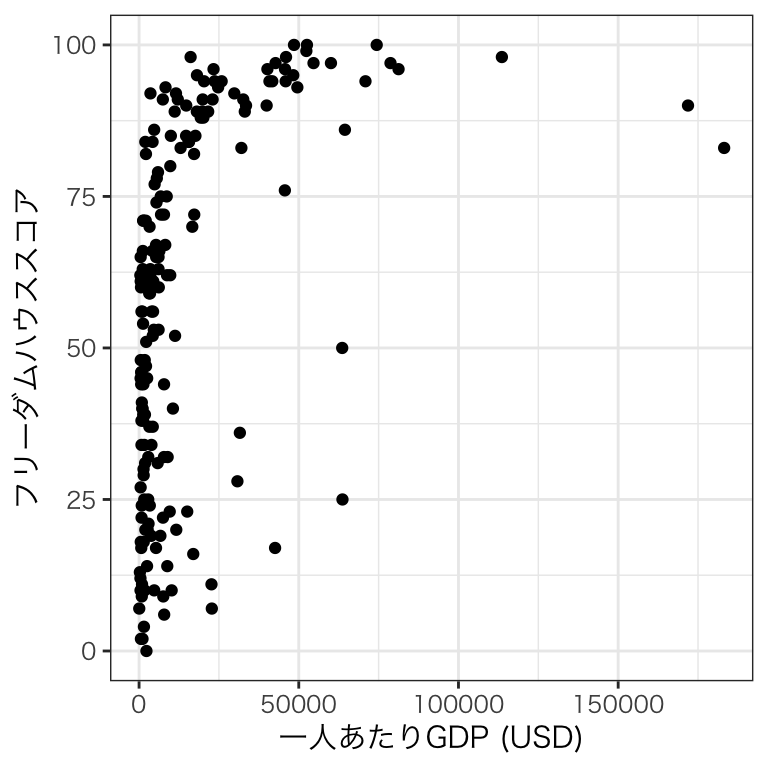
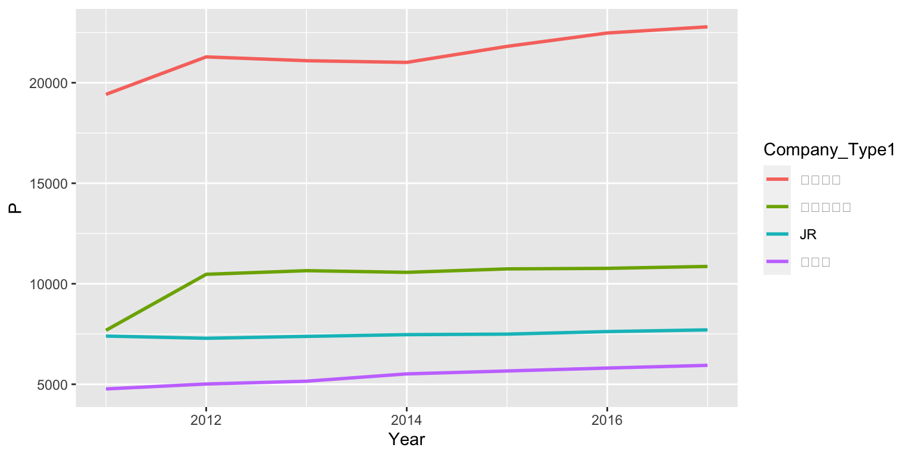
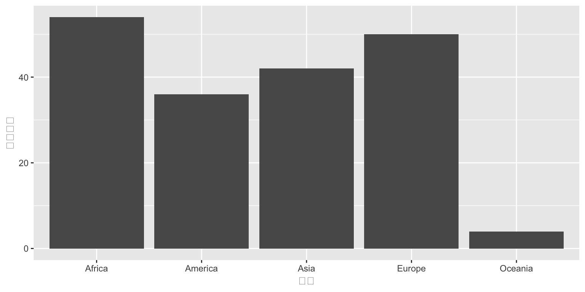
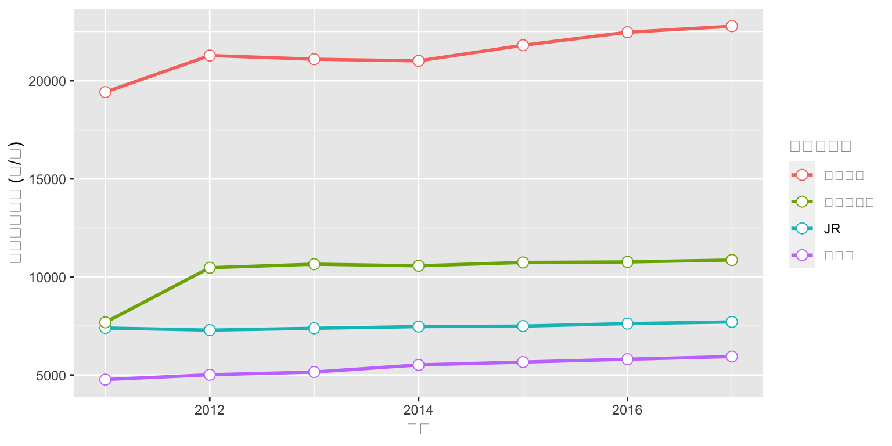
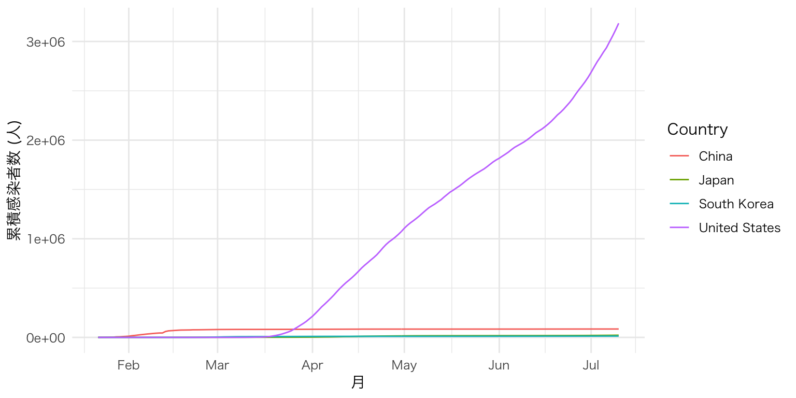
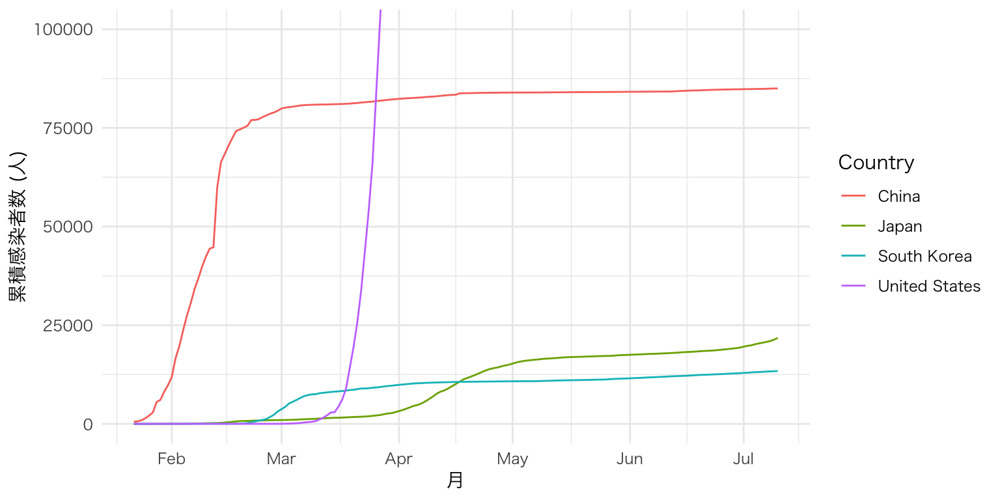

14. 可視化
14.1 可視化のためのパッケージ
- Rのbase graphic
- lattice
- ggplot2
14.3 グラフィックの文法
14.3.1 ggplot2のイメージ
ggplot(data = df) +
geom_line(aes(x = Year, y = P, color = Company_Type1),
size = 1) +
geom_point(aes(x = Year, y = P, color = Company_Type1),
size = 3, pch = 21, fill = "white") +
labs(x = "年度", y = "平均利用者数 (人/日)", color = "事業者区分") +
scale_x_continuous(breaks = 2011:2017, labels = 2011:2017) +
theme_minimal(base_family = "HiraKakuProN-W3")

# 第2層: X軸はYear、Y軸はPにし、Company_type1ごとに色分けした折れ線グラフを作成し、線の太さは1とする。
ggplot(data = df) +
geom_line(aes(x = Year, y = P, color = Company_Type1),
size = 1)
# 第3層: X軸はYear、Y軸はPにし、Company_type1ごとに色分けした散布図を作成する。
# 点の大きさは3、点のタイプは21 (外線付き)、点の中身の色は白よする
ggplot(data = df) +
geom_line(aes(x = Year, y = P, color = Company_Type1),
size = 1) +
geom_point(aes(x = Year, y = P, color = Company_Type1),
size = 3, pch = 21, fill = "white")
# 第4層: X軸、Y軸のラベルをそれぞれ「年度」、「平均利用者数 (人/日)」に
# 凡例のcolorのラベルは「事業者区分」にする
ggplot(data = df) +
geom_line(aes(x = Year, y = P, color = Company_Type1),
size = 1) +
geom_point(aes(x = Year, y = P, color = Company_Type1),
size = 3, pch = 21, fill = "white") +
labs(x = "年度", y = "平均利用者数 (人/日)", color = "事業者区分")
# 第5層: 連続変数で構成されたX軸を調整する
# 目盛りは2011, 2012, ..., 2017とし、ラベルも2011, 2012, ..., 2017に
ggplot(data = df) +
geom_line(aes(x = Year, y = P, color = Company_Type1),
size = 1) +
geom_point(aes(x = Year, y = P, color = Company_Type1),
size = 3, pch = 21, fill = "white") +
labs(x = "年度", y = "平均利用者数 (人/日)", color = "事業者区分") +
scale_x_continuous(breaks = 2011:2017, labels = 2011:2017)
# 第6層: テーマをminimalに指定し、フォント群はHiraKakuProN-W3に
ggplot(data = df) +
geom_line(aes(x = Year, y = P, color = Company_Type1),
size = 1) +
geom_point(aes(x = Year, y = P, color = Company_Type1),
size = 3, pch = 21, fill = "white") +
labs(x = "年度", y = "平均利用者数 (人/日)", color = "事業者区分") +
scale_x_continuous(breaks = 2011:2017, labels = 2011:2017) +
theme_minimal(base_family = "HiraKakuProN-W3")

図 14.1: ggplot2の図が出来上がるまで (全体像)
14.3.2 グラフィックの構成要素
ggplot2におけるプロット (plot)は「データ + 幾何オブジェクト + 座標系」で構成されます。
ここでいうデータは主にデータフレームまたはtibbleです。これは主にggplot()関数の第一引数と指定するか、パイプで渡すのが一般的です。ただし、ggplot2で作図するためには、データを予め整然データに整形する必要があります。
幾何オブジェクトとは簡単に言うと図の種類です。散布図、折れ線グラフ、棒グラフ、ヒストグラムなど、ggplot2は様々なタイプの幾何オブジェクトを提供しており、ユーザー自作の幾何オブジェクトもRパッケージとして多く公開されています。幾何オブジェクトは関数の形で提供されており、geom_で始まるといった共通点があります。散布図はgeom_point()、折れ線グラフはgeom_line()のような関数を使います。
この幾何オブジェクトに線や点、棒などを表示する際には、どの変数が横軸で、どの変数が縦軸かを明記する必要があります。また、変数によって点や線の色が変わったりする場合も、どの変数によって変わるかを明記します。これを マッピングと呼びます。また、必要に応じて位置と統計量を明記する必要がありますが、これは指定しなくてもとりあえず何らかの図は出力されます。
最後に座標系は幾何オブジェクトが表示される空間の特徴を定義します。最も重要な特徴は横軸と縦軸の下限と上限です。または、空間を回転することなどもできます。
ggplot2の図は以上の3つ要素を重ねることで出来ます。
図 14.2: ggplot2の構造の例
ただし、この中で座標系は適切だと判断される座標系に設定してくれるため、ユーザーが必ず指定すべきものはデータと幾何オブジェクトのみです。また、幾何オブジェクトはマッピングを含んでおり、これも必ず指定する必要があります。したがって、ggplot2で作図するための最小限のコードは以下のようになります。
# ggplot2におけるプロットの基本形
# データはggplotの第一引数と使う場合が多いため、「data =」は省略可能
# マッピングは主に幾何オブジェクトの第一引数として使うため、「mapping =」は省略可能
ggplot(data = データ名) +
幾何オブジェクト関数(mapping = aes(マッピング))
# パイプを使う場合
データ名 %>%
ggplot() +
幾何オブジェクト関数(mapping = aes(マッピング))注意すべき点はggplot2においてレイヤーを重ねる際は%>%でなく、+を使う点です。パイプ演算子は左側の結果を右に渡す意味を持ちますが、ggplot2はデータを渡すよりも、レイヤーを足していくイメージですから、+を使います。
以下はggplot2の必須要素であるデータと幾何オブジェクト、マッピングなどについて解説し、続いて図は見栄を調整するための関数群を紹介します。
14.3.2.1 データ
dataとmapping引数で指定
グラフが1データのみ使用している場合、ggplot(data = データ名)、またはデータ名 %>% ggplot()
1つのプロットが複数のデータを使用するケースは適宜紹介
14.3.2.2 幾何オブジェクト
geom_*()関数で表記
14.3.2.3 マッピング
ggplot()またはgeom_*()内にmapping = aes(マッピング)で指定
グラフ上に使用している変数が全ての幾何オブジェクトにおいて共通している場合、ggplot()内にmapping = aes()を指定
14.4 実習用データ
全国の鉄道駅データ
9150駅の情報を収録
駅の地理的情報、路線、事業者情報
2011年度から2017年度までの利用者数 (人/日)
| 変数名 | 説明 | 詳細 |
|---|---|---|
ID
|
駅ID | |
Station_Name
|
駅名 | |
Pref
|
所在地 | 都道府県 (ID) |
Zipcode
|
所在地 | 郵便番号 |
Address
|
所在地 | 住所 |
Longitude
|
経度 | |
Latitude
|
緯度 | |
Station_Status
|
駅の状態 | 0:運用中 / 1:運用前 / 2:廃止 |
Line_ID
|
路線ID | |
Line_Name
|
路線名 | |
Line_Status
|
路線の状態 | 0:運用中 / 1:運用前 / 2:廃止 |
Company_ID
|
事業者ID | |
Company_Name
|
事業者名 | |
Company_Type1
|
事業者タイプ1 | 0:その他 / 1:JR / 2:大手私鉄 / 3:準大手私鉄 |
Company_Type2
|
事業者タイプ2 | 1:JR / 2:公営 / 3:民営 / 4:第三セクター |
Company_Status
|
事業者の状態 | 0:運用中 / 1:運用前 / 2:廃止 |
P2011
|
2011年度利用者数 | 単位は(人/日) |
P2012
|
2012年度利用者数 | 単位は(人/日) |
P2013
|
2013年度利用者数 | 単位は(人/日) |
P2014
|
2014年度利用者数 | 単位は(人/日) |
P2015
|
2015年度利用者数 | 単位は(人/日) |
P2016
|
2016年度利用者数 | 単位は(人/日) |
P2017
|
2017年度利用者数 | 単位は(人/日) |
利用者数の情報は国土交通省の国土数値情報「駅別乗降客数データ」から、その他の情報は「駅データ.jp」から入手したものです。両データの結合は緯度と経度を基準にマッチングし、駅名が一致するケースのみ残したものです。したがって、不正確にマッチングされたケースが存在する可能性があります（とりわけ乗換駅など）。この実習用データを使って、何らかの意味のある分析はできません。あくまでも実習用データとしてお使いください。
14.5 棒グラフ
14.6 ヒストグラム
14.7 散布図
14.8 図のカスタマイズ
14.9 練習問題
dfを用い、以下のような図を作成せよ。